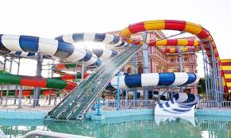
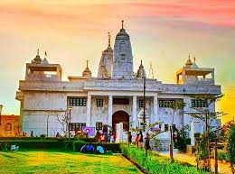

JK Temple is a Hindu temple in the Indian city of Kanpur,
Uttar Pradesh, India. It is considered to be a unique blend of ancient and modern
architecture. The mandapa of the temple has been constructed with high roof for
adequate ventilation of light and air.
Singhania family which owns a number of companies under its umbrella JK Organisation formed a
trust known as JK Trust in 1953.[5] The trust constructed this temple and was opened for
public in the year 1960.[1] The temple celebrated its 50 years in 2010.
The temple is located on First Street in Sarvodaya Nagar locality of Kanpur.
The Kanpur Airport is located around 14 km from temple's campus. Kanpur Central Railway Station
is around 5 km from the temple and has trains to Lucknow, Allahabad, Delhi, Kolkata and other
major cities of India. Photography is however prohibited and the place is heavily secured with guards
and cctv. Handbags and large purses are not allowed and need to be deposited at the cloak room before
entering. Visitors are frisked before entry.

Blue World
The thrilling rides at Blue World are designed for one thing absolute FUN!
Even though the roller coasters are considered the “stars” of the show, our rides are
no less exciting, whether you're a child or an adult.
Midway classics like Polipo Octopus and Striking Car are great for giggling together.
But if you're ready for even more thrilling activities, take a ride on Roller Coaster,
one of the largest rides ! Or get on to the Chair lift .
Merry Go Round, one of the swing rides, will bring back memories of the smaller
version you had growing up.
Our thrill rides come in all shapes and sizes. If you are an adrenaline junkie who wants
to ride your entire favorite thrill rides. Use this itinerary to plan your visit from dusk
to dawn, starting with Early Entry and ending with thrills at dusk.

Iskcon
Hare Krishna ISKCON KANPUR is a Hare Krishna temple, community,ashram and Gaushalla dedicated
to the practice and prpogation of bhakti-yoga or loving service to Sri Krishna, the Supreme
Person (God). We are a branch of the International Society for Krishna Consciousness (ISKCON),
a worldwide spiritual movement founded by His Divine Grace A.C. Bhaktivedanta Swami Prabhupada,
in New York City in 1966. Under the guidance of His Holiness Gopal Krishna Goswami and
Sriman Devakinandan Das, ISKCON Kanpur is home to a loving community of practicing Hare Krishna
devotees and dedicated monks.